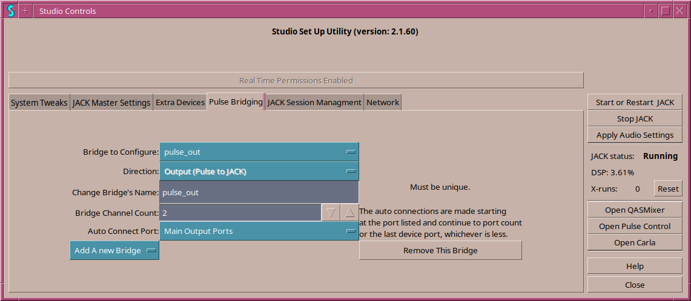

For most Linux desktops, Pulseaudio is the desktop audio server and many desktop applications talk directly to Pulseaudio. JACK will take exclusive access to any device it uses as master to ensure no other application changes it's sample rate or interferes with the audio in some other way. The utility used for bridging extra devices also takes exclusive access of the device it uses. So for desktop applications to have audio while the JACK audio server is running Pulseaudio needs to be bridged to JACK. In this way, JACK acts as the "device" for Pulseaudio.
It has been found that when Pulseaudio is bridged to JACK it will cause interference if it can still see any audio hardware and so before bridging, Studio Controls will disable any ALSA modules in Pulseaudio making JACK the only audio "device" Pulseaudio sees.
Studio Controls can set up any number of pulse->JACK bridges with any number of channels.
This screen consists of these controls:
num_dirrection where num is the first number
that makes the JACK client name unique and dirrection is in or out depending
on the direction chosen. The new bridge will default to two channels
and no auto connections.
 Previous: Extra Devices
--- Introduction ---
Next: Jack Session Management
Previous: Extra Devices
--- Introduction ---
Next: Jack Session Management